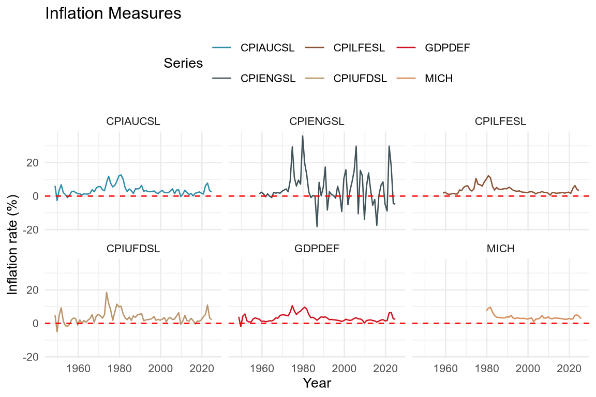
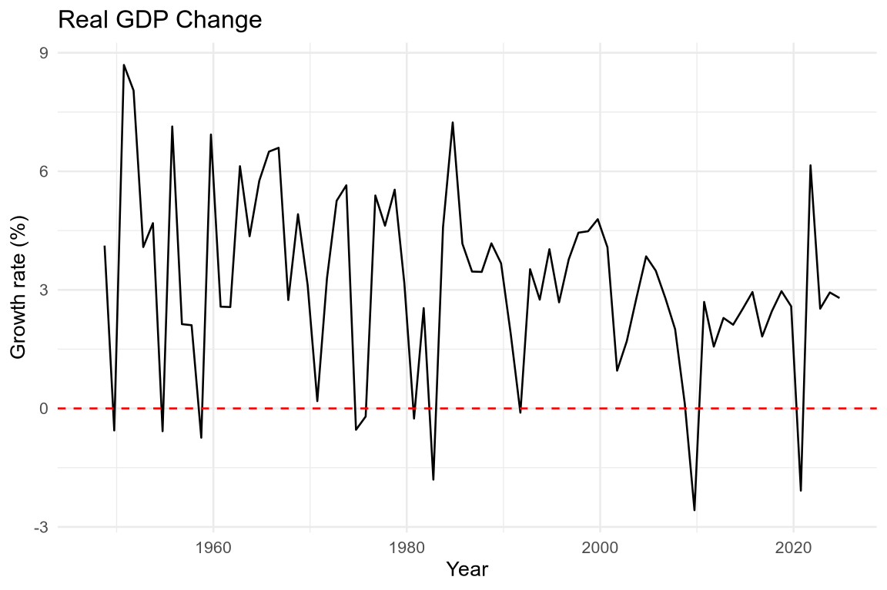
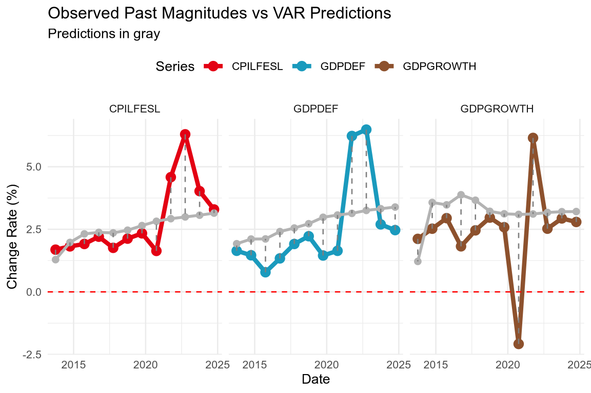

run_models <- TProblem Set 1
Problem
Recent headlines emphasize the challenges faced by central banks: inflation remains persistent in the U.S., global supply chain uncertainties continue, and growth forecasts remain fragile amid geopolitical risks.
Goal
Provide policy recommendations for the Federal Reserve (Fed) new forecasting system.
GitHub repository
All the codes and data for this problem set are available in the GitHub repository: https://github.com/pachadotdev/ecod025
Technical note
For this problem set, the models were written in C++ using the Armadillo library for linear algebra (Sanderson and Curtin 2016; Sanderson 2024).
To run the model functions, you need to change this boolean to “TRUE”, otherwise when rendering the file it will load pre-computed results.
The functions were made available in the R package ecod025ps1 which can be installed from this same repository:
if (!require("ecod025ps1") && run_models) {
repository <- "https://cran.rstudio.com"
if (!require("pak")) {
install.packages("pak", repos = repository)
}
pak::pkg_install("pachadotdev/ecod025/ecod025ps1")
if (!require("dynlm")) install.packages("dynlm")
}
if (run_models) {
library(ecod025ps1)
library(dynlm)
}R package for accessing the data:
if (!require("alfred")) {
install.packages("alfred")
}
library(alfred)Additional packages for data manipulation and plotting:
if (!require("dplyr")) {
install.packages("dplyr")
}
if (!require("lubridate")) {
install.packages("lubridate")
}
if (!require("rlang")) {
install.packages("rlang")
}
if (!require("purrr")) {
install.packages("purrr")
}
if (!require("ggplot2")) {
install.packages("ggplot2")
}
if (!require("tintin")) {
install.packages("tintin")
}
library(dplyr)
library(lubridate)
library(rlang)
library(purrr)
library(ggplot2)
library(tintin)Models
Vector Autoregressions (VAR)
\(\text{VAR}(p)\) for inflation (\(\pi_t\)) and growth (\(g_t\)):
\[ y_t = A_1 y_{t-1} + \ldots + Ap y_{t-p} + u_t = A(L) y_t + u_t,\: y_t = [\pi_t, g_t]^T. \]
Factor-Augmented VAR (FA-VAR)
\[ \begin{aligned} X_t &= \Lambda F_t + e_t, \cr F_t &= \Phi_1 F_{t-1} + \ldots + \Phi_p F_{t-p} + v_t, \cr y_t &= B(L)y_{t-1} + C(L)F_{t} + u_t \end{aligned} \]
Dynamic Factor Model (DFM)
\[ \begin{aligned} X_t &= \Lambda F_t + u_t,\: u_t \sim N(0, R), \cr F_t &= AF_{t-1} + \eta_t,\: \eta_t \sim N(0, Q). \end{aligned} \]
For DFM, we consider VAR models that are identified and that can be written using lag polynomials such that besides \(F_t\) lagged definition we have
\[ \begin{aligned} A(L) F_t &= v_t \cr B(L) u_t &= e_t, \end{aligned} \]
where \(A(L)\) and \(B(L)\) are lag polynomials with \(p\) and \(q\) lags, respectively (Hansen 2022).
To avoid identification issues, we will restrict the lag polynomial \(B(L)\) to be diagonal.
Defining the inverse lag operators
\[ \begin{aligned} D(L) &= A(L)^{-1} \cr C(L) &= B(L)^{-1} \end{aligned}, \]
then we have
\[ \begin{aligned} X_t &= \Lambda F_t + u_t \cr \implies C(L) X_t &= C(L) \Lambda F_t + C(L) u_t \implies C(L) X_t &= C(L) \Lambda D(L) v_t + e_t \cr \implies C(L) X_t &= \Lambda(L) v_t + e_t. \end{aligned} \]
Furthermore, we will restrict \(\Lambda(L) = C(L) \Lambda D(L)\) to be a polynomial of \(l\) lags.
The static form of the dynamic model is
\[ C(L) X_t = HV_t + e_t \]
for a matrix \(H\) with dimensions \(N \times rl\) columns provided that \(X_t\) and u_t$ are \(N \times 1\), \(\Lambda\) is \(N \times r\) (\(r < N\)), and \(F_t\) is \(r \times 1\).
To avoid scaling issues, we will transform the elements of \(X_t\) to have mean 0 and common variance.
State-space representation
Vector Autoregressions (VAR)
Model specification (reduced form):
- \(y_t = A(L) \cdot y_t + u_t\)
State-space form (companion representation):
- Observation: \(y_t = [I_K, 0, \ldots, 0] \cdot \chi_t + u_t\)
- Transition: \(\chi_t = F \cdot \chi_{t-1} + \eta_t\)
where: - \(\chi_t = [y_t', y_{t-1}', \ldots, y_{t-p+1}']'\) is the state vector (\(Kp \times 1\)) and \(F\) is the companion matrix (\(Kp \times Kp\)) - \(y_t\) is \(K \times 1\) (observed variables) - \(A_i\) are \(K \times K\) (coefficient matrices for \(i = 1, \ldots, p\)) - \(u_t \sim N(0, \Sigma)\) (error term) - \(\Sigma\) is \(K \times K\) (covariance matrix)
Estimation: Equation-by-equation OLS
Factor-Augmented VAR (FA-VAR)
Model specification:
- \(X_t = \Lambda F_t + e_t\)
- \(F_t = \Phi_1 F_{t-1} + \ldots + \Phi_p F_{t-p} + v_t\)
- \(y_t = B(L) y_{t-1} + C(L) F_{t-1} + u_t\)
where \(X_t = [y_t, y_{t-1}, \ldots, y_{t-n}]\) is the information set constructed from current and lagged values of the target variable.
We use lagged factors \(F_{t-1}\) (not contemporaneous \(F_t\)) in the augmented VAR to avoid data leakage, since \(F_t\) is extracted from \(X_t\) which contains \(y_t\).
State-space form (companion representation):
- Observation: \(X_t = [\Lambda, 0, \ldots, 0] \cdot \chi_t + e_t\)
- Transition: \(\chi_t = A \cdot \chi_{t-1} + \eta_t\)
where: - \(\chi_t = [F_t', F_{t-1}', \ldots, F_{t-p+1}']'\) is the state vector and \(A\) is the companion matrix for the factor VAR - \(X_t\) is \(N \times 1\) (information set: current and lagged \(y\)) - \(F_t\) is \(r \times 1\) (latent factors extracted from \(X_t\), with \(r < N\)) - \(y_t\) is \(K \times 1\) (target variable of interest, \(K=1\) for univariate) - \(\Lambda\) is \(N \times r\) (factor loadings) - \(B(L) = B_1 L + \ldots + B_{p_y} L^{p_y}\) (lag polynomial for \(y\) dynamics) - \(\Phi(L) = \Phi_1 L + \ldots + \Phi_{p_f} L^{p_f}\) (lag polynomial for factor dynamics) - \(C(L) = C_1 L + \ldots + C_{p_f} L^{p_f}\) (lag polynomial for factor impact on \(y\))
Estimation: PCA for factor extraction, OLS for VARs
Dynamic Factor Model (DFM)
Model specification (state-space form):
- Observation equation: \(X_t = \Lambda \cdot F_t + u_t\), \(u_t \sim N(0, R)\)
- State equation: \(F_t = A \cdot F_{t-1} + \eta_t\), \(\eta_t \sim N(0, Q)\)
For VAR(p) factor dynamics, use companion form:
- Observation: \(X_t = [\Lambda, 0, \ldots, 0] \cdot \chi_t + u_t\)
- Transition: \(\chi_t = A \cdot \chi_{t-1} + \eta_t\)
where: - \(\chi_t = [F_t', F_{t-1}', \ldots, F_{t-p+1}']'\) is the state vector (\(rp \times 1\)) and \(A\) is the companion matrix (\(rp \times rp\)) - \(X_t\) is \(N \times 1\) (observed variables, standardized to mean 0, common variance) - \(F_t\) is \(r \times 1\) (latent factors, \(r < N\)) - \(\Lambda\) is \(N \times r\) (factor loadings) - \(A\) is \(r \times r\) (transition matrix for VAR(1)) or \(rp \times rp\) (companion form for VAR(p)) - \(R\) is \(N \times N\) (idiosyncratic covariance, diagonal) - \(Q\) is \(r \times r\) (factor innovation covariance) or \(rp \times rp\) (companion form)
Estimation: EM algorithm with Kalman filter for state estimation
Forecast Comparison Metrics
Root Mean Squared Forecast Error (RMSFE)
\[ \text{RMSFE} = \sqrt{\frac{1}{T} \sum_{t=1}^{T} (y_{t+h} - \hat{y}_{t+h \mid t})^2}. \]
Mean Absolute Error (MAE)
\[ \text{MAE} = \frac{1}{T} \sum_{t=1}^{T} |y_{t+h} - \hat{y}_{t+h \mid t}|. \]
Data
Get the different series used to measure inflation according to FED:
try(dir.create("data"), silent = TRUE)
download_data <- function(series_id) {
fout <- paste0("data/", series_id, ".rds")
if (!file.exists(fout)) {
data <- get_alfred_series(series_id)
data <- as_tibble(data)
saveRDS(data, fout, compress = "xz")
} else {
data <- readRDS(fout)
}
return(data)
}
# Consumer Price Index for All Urban Consumers: All Items
cpiaucsl <- download_data("CPIAUCSL")
# Consumer Price Index for All Urban Consumers: All Items Less Food & Energy
cpilfesl <- download_data("CPILFESL")
# Consumer Price Index for All Urban Consumers: Energy
cpiengsl <- download_data("CPIENGSL")
# Consumer Price Index for All Urban Consumers: Food
cpifood <- download_data("CPIUFDSL")
# GDP Deflator
gdpdef <- download_data("GDPDEF")Get the quarterly real GDP data to compute growth rates:
gdpc1 <- download_data("GDPC1")We also require the ‘University of Michigan: Inflation Expectation (Median expected price change next 12 months)’ as a covariate for DFM:
# University of Michigan: Inflation Expectation (Median expected price change next 12 months)
michigan <- download_data("MICH")Data preparation
We need to filter and differentiate to get inflation rates as
\[ \text{Inflation Rate}_t = 100 \times \frac{C_t - C_{t-1}}{C_{t-1}} \]
We will use October data to compute the inflation rate to match the reported quarterly GDP data.
inflation_mm <- function(data, col) {
data %>%
as_tibble() %>%
arrange(desc(date)) %>%
# keep the most updated figure
group_by(date) %>%
filter(realtime_period == max(realtime_period)) %>%
ungroup() %>%
mutate(year = year(date), month = month(date)) %>%
filter(month == 10) %>%
mutate(
inflation = 100 * (!!sym(col) - lead(!!sym(col))) / lead(!!sym(col))
)
}
cpiaucsl_mm <- inflation_mm(cpiaucsl, "CPIAUCSL")
cpilfesl_mm <- inflation_mm(cpilfesl, "CPILFESL")
cpiengsl_mm <- inflation_mm(cpiengsl, "CPIENGSL")
cpifood_mm <- inflation_mm(cpifood, "CPIUFDSL")
gdpdef_mm <- inflation_mm(gdpdef, "GDPDEF")The GDP data has a different frequency (quarterly) so we need to adjust the code:
gdpc1_yy <- gdpc1 %>%
arrange(desc(date)) %>%
group_by(date) %>%
filter(realtime_period == max(realtime_period)) %>%
ungroup() %>%
mutate(year = year(date)) %>%
filter(year < 2025) %>%
group_by(year) %>%
summarise(gdp = sum(GDPC1), .groups = "drop") %>%
mutate(
date = ymd(paste0(year, "-10-01")),
gdpgrowth = 100 * (gdp - lag(gdp)) / lag(gdp)
)UM data has a different format (it is already in percentage base 100 and lagged 1 year):
michigan_mm <- michigan %>%
arrange(desc(date)) %>%
group_by(date) %>%
filter(realtime_period == max(realtime_period)) %>%
ungroup() %>%
mutate(year = year(date), month = month(date)) %>%
filter(month == 10) %>%
mutate(date = date + years(1)) %>%
rename(inflation = MICH)Merge all into one data frame for plotting:
inflation <- map2_df(
list(
cpiaucsl_mm,
cpilfesl_mm,
cpiengsl_mm,
cpifood_mm,
gdpdef_mm,
michigan_mm
),
c("CPIAUCSL", "CPILFESL", "CPIENGSL", "CPIUFDSL", "GDPDEF", "MICH"),
function(x, y) {
x %>%
select(date, value = inflation) %>%
mutate(series = y)
}
)Plot of the different inflation measures:
ggplot(inflation, aes(x = date, y = value, color = series)) +
geom_line() +
labs(
title = "Inflation Measures",
x = "Year",
y = "Inflation rate (%)",
color = "Series"
) +
scale_colour_tintin_d() +
facet_wrap(~series, ncol = 3) +
theme_minimal(base_size = 10) +
theme(legend.position = "top") +
geom_hline(yintercept = 0, color = "red", linetype = "dashed")
ggplot(gdpc1_yy, aes(x = date, y = gdpgrowth)) +
geom_line() +
labs(
title = "Real GDP Change",
x = "Year",
y = "Growth rate (%)",
color = "Series"
) +
theme_minimal(base_size = 10) +
theme(legend.position = "top") +
geom_hline(yintercept = 0, color = "red", linetype = "dashed")
The plots show some level of similarity between all series except for CPIENGSL (energy prices) which is more volatile. The series without food and energy (CPILFESL) is more stable and is similar to the GDP deflator (GDPDEF) while the other series have more volatility. The Michigan survey (MICH) shows a proper forward-looking measure of inflation expectations.
Because energy depends on external factors (e.g., geopolitical events that affect oil prices) and food prices are affected by seasonal patterns, we will use the CPILFESL and GDP deflator as our main inflation measure.
GDP is also affected by external factors (e.g., the \(X - M\) component of GDP) but we do not have another measure of GDP growth.
Estimate a VAR model
The goal is to choose the lag length based on information criteria.
The first step is to determine the lag length using information criteria.
For CPILFESL and adapting from Econometrics with R, which uses BIC, we will use the AIC criterion.
\[ \text{AIC}(p) = \log \left( \frac{\text{SSR}(p)}{T} \right) + (p+1)\frac{2}{T}. \]
# compute AIC for AR model objects of class 'dynlm'
AIC <- function(model) {
ssr <- sum(model$residuals^2)
t <- length(model$residuals)
npar <- length(model$coef)
return(
round(c("AIC" = log(ssr / t) + npar * 2 / t), 4)
)
}
# intercept only AR model
AIC(dynlm(ts(cpilfesl_mm$inflation) ~ 1)) AIC
1.8429 AIC(dynlm(ts(gdpc1_yy$gdpgrowth) ~ 1)) AIC
1.6976 Looping over different model orders:
# loop AIC over models of different orders
order <- 1:10
inflation_AICs <- vapply(
order,
function(x) {
AIC(dynlm(
ts(cpilfesl_mm$inflation) ~ L(ts(cpilfesl_mm$inflation), 1:x)
))
},
FUN.VALUE = numeric(1)
)
gdpdef_AICs <- vapply(
order,
function(x) {
AIC(dynlm(ts(gdpdef_mm$inflation) ~ L(ts(gdpdef_mm$inflation), 1:x)))
},
FUN.VALUE = numeric(1)
)
gdpgrowth_AICs <- vapply(
order,
function(x) {
AIC(dynlm(ts(gdpc1_yy$gdpgrowth) ~ L(ts(gdpc1_yy$gdpgrowth), 1:x)))
},
FUN.VALUE = numeric(1)
)
saveRDS(inflation_AICs, "data/aics_cpilfesl.rds")
saveRDS(gdpdef_AICs, "data/aics_gdpdef.rds")
saveRDS(gdpgrowth_AICs, "data/aics_gdpgrowth.rds")if (!run_models) {
inflation_AICs <- readRDS("data/aics_cpilfesl.rds")
gdpdef_AICs <- readRDS("data/aics_gdpdef.rds")
gdpgrowth_AICs <- readRDS("data/aics_gdpgrowth.rds")
}
which.min(inflation_AICs)[1] 4which.min(gdpdef_AICs)[1] 6which.min(gdpgrowth_AICs)[1] 4Based on the AIC criterion, we select a lag length of:
- 4 for CPILFESL
- 6 for GDPDEF
- 4 for GDP growth
Now we can estimate the VAR model using var_model() from the ecod025ps1 package:
# remove the last value as it is NA after the the lagged difference
h <- 12L
l1 <- 4L
l2 <- 6L
l3 <- 4LThe interesting excercise is to evaluate the forecasts from the VAR model by subsetting the data “T” years before the end date and compare the predictions with the actual values. One problem in this time horizon is that we have the COVID-19 pandemic (2020) external shock.
In other words, we will consider both in and out of sample model metrics. Because of the GDP data, we need to trim the series before 2025.
common_years <- cpilfesl_mm %>%
select(date) %>%
inner_join(select(gdpdef_mm, date), by = "date") %>%
inner_join(select(gdpc1_yy, date), by = "date")
# subset data
cpilfesl_mm_subset <- cpilfesl_mm %>%
inner_join(common_years, by = "date") %>%
filter(date <= (max(date) - years(h)))
gdpdef_mm_subset <- gdpdef_mm %>%
inner_join(common_years, by = "date") %>%
filter(date <= (max(date) - years(h)))
gdpc1_yy_subset <- gdpc1_yy %>%
inner_join(common_years, by = "date") %>%
filter(date <= (max(date) - years(h)))fit_cpilfesl_subset <- var_model(
na.omit(as.matrix(cpilfesl_mm_subset$inflation)),
p = l1,
include_const = TRUE,
forecast_h = h
)
fit_gdpdef_subset <- var_model(
na.omit(as.matrix(gdpdef_mm_subset$inflation)),
p = l2,
include_const = TRUE,
forecast_h = h
)
fit_gdpgrowth_subset <- var_model(
na.omit(as.matrix(gdpc1_yy_subset$gdpgrowth)),
p = l3,
include_const = TRUE,
forecast_h = h
)
saveRDS(fit_cpilfesl_subset, "data/fit_cpilfesl_subset.rds")
saveRDS(fit_gdpdef_subset, "data/fit_gdpdef_subset.rds")
saveRDS(fit_gdpgrowth_subset, "data/fit_gdpgrowth_subset.rds")if (!run_models) {
fit_cpilfesl_subset <- readRDS("data/fit_cpilfesl_subset.rds")
fit_gdpdef_subset <- readRDS("data/fit_gdpdef_subset.rds")
fit_gdpgrowth_subset <- readRDS("data/fit_gdpgrowth_subset.rds")
}
fit_predictions2 <- tibble(
date = max(cpilfesl_mm_subset$date) +
years(seq_len(fit_cpilfesl_subset$forecast_h)),
prediction = as.numeric(fit_cpilfesl_subset$forecasts),
series = "CPILFESL"
) %>%
bind_rows(
tibble(
date = max(gdpdef_mm_subset$date) +
years(seq_len(fit_gdpdef_subset$forecast_h)),
prediction = as.numeric(fit_gdpdef_subset$forecasts),
series = "GDPDEF"
)
) %>%
bind_rows(
tibble(
date = max(gdpc1_yy_subset$date) +
years(seq_len(fit_gdpgrowth_subset$forecast_h)),
prediction = as.numeric(fit_gdpgrowth_subset$forecasts),
series = "GDPGROWTH"
)
)
fit_predictions2 <- fit_predictions2 %>%
left_join(
inflation %>%
filter(series %in% c("CPILFESL", "GDPDEF")) %>%
filter(year(date) > max(year(date) - h)) %>%
rename(observed = value) %>%
bind_rows(
gdpc1_yy %>%
filter(year(date) > max(year(date) - h)) %>%
select(date, observed = gdpgrowth) %>%
mutate(series = "GDPGROWTH")
),
by = c("date", "series")
)
ggplot(fit_predictions2) +
geom_line(aes(x = date, y = observed, color = series), linewidth = 1.5) +
geom_point(aes(x = date, y = observed, color = series), size = 3) +
geom_line(
aes(x = date, y = prediction, color = series),
linewidth = 1,
color = "gray70"
) +
geom_point(
data = fit_predictions2,
aes(x = date, y = prediction, color = series),
size = 2,
color = "gray70"
) +
geom_segment(
data = fit_predictions2,
aes(x = date, xend = date, y = observed, yend = prediction),
linetype = "dashed",
color = "gray50"
) +
labs(
title = "Observed Past Magnitudes vs VAR Predictions",
subtitle = "Predictions in gray",
x = "Date",
y = "Change Rate (%)",
color = "Series"
) +
scale_colour_tintin_d() +
facet_wrap(~series, ncol = 3) +
theme_minimal(base_size = 10) +
theme(legend.position = "top") +
geom_hline(yintercept = 0, color = "red", linetype = "dashed")
For the out-of-sample RMSFE and MAE metrics we need an R-side RMSFE and MAE functions as their C++ counterparts are not exported):
RMSFE <- function(actual, predicted) {
sqrt(mean((actual - predicted)^2, na.rm = TRUE))
}
MAE <- function(actual, predicted) {
mean(abs(actual - predicted), na.rm = TRUE)
}
fit_predictions2 %>%
filter(series %in% c("CPILFESL", "GDPDEF", "GDPGROWTH")) %>%
group_by(series) %>%
summarise(
RMSFE_out_of_sample = RMSFE(observed, prediction),
MAE_out_of_sample = MAE(observed, prediction)
) %>%
ungroup() %>%
mutate(
RMSFE_in_sample = c(
fit_gdpgrowth_subset$rmsfe,
fit_gdpdef_subset$rmsfe,
fit_gdpgrowth_subset$rmsfe
),
MAE_in_sample = c(
fit_gdpgrowth_subset$mae,
fit_gdpdef_subset$mae,
fit_gdpgrowth_subset$mae
)
) %>%
select(
series,
RMSFE_in_sample,
RMSFE_out_of_sample,
MAE_in_sample,
MAE_out_of_sample
)# A tibble: 3 × 5
series RMSFE_in_sample RMSFE_out_of_sample MAE_in_sample MAE_out_of_sample
<chr> <dbl> <dbl> <dbl> <dbl>
1 CPILFESL 1.97 1.19 1.57 0.803
2 GDPDEF 0.975 1.57 0.660 1.27
3 GDPGROWTH 1.97 1.94 1.57 1.34 Estimate a FA-VAR model
The FA-VAR model follows a pure time series approach: it creates an information set \(X_t\) from the target variable and its lags, extracts latent factors via PCA, and augments a VAR with these factors.
Model specification: - \(X_t = [y_t, y_{t-1}, \ldots, y_{t-L}]\) (information set created from y and its lags) - Extract \(r\) factors from \(X_t\) using PCA - Estimate: \(y_t = B(L) y_{t-1} + C(L) F_t + u_t\) (augmented VAR with factor lags)
This approach captures nonlinear patterns in the autocorrelation structure through factor extraction.
# FA-VAR parameters (simplified to avoid overfitting)
n_lags <- 3L # Number of lags to create information set X (creates 4 variables)
n_factors <- 2L # Number of factors to extract from X
p_f <- 2L # Factor lags
y <- na.omit(as.matrix(cpilfesl_mm_subset$inflation))
# Estimate FA-VAR models
fit_cpilfesl_favar <- favar_model(
y = y,
n_lags = n_lags,
n_factors = n_factors,
p_y = l1,
p_f = p_f,
include_const = TRUE,
forecast_h = h
)Error:
warning: # Tuned parameters for GDPDEF
n_lags <- 3L
n_factors <- 2L
p_f <- 1L
y <- na.omit(as.matrix(gdpdef_mm_subset$inflation))
fit_gdpdef_favar <- favar_model(
y = y,
n_lags = n_lags,
n_factors = n_factors,
p_y = l2,
p_f = p_f,
include_const = TRUE,
forecast_h = h
)
# Tuned parameters for GDP growth
n_lags <- 3L
n_factors <- 2L
p_f <- 1L
y <- na.omit(as.matrix(gdpc1_yy_subset$gdpgrowth))
fit_gdpc1_favar <- favar_model(
y = y,
n_lags = n_lags,
n_factors = n_factors,
p_y = l3,
p_f = p_f,
include_const = TRUE,
forecast_h = h
)
saveRDS(fit_cpilfesl_favar, "data/fit_cpilfesl_favar.rds")
saveRDS(fit_gdpdef_favar, "data/fit_gdpdef_favar.rds")
saveRDS(fit_gdpc1_favar, "data/fit_gdpc1_favar.rds")if (!run_models) {
fit_cpilfesl_favar <- readRDS("data/fit_cpilfesl_favar.rds")
fit_gdpdef_favar <- readRDS("data/fit_gdpdef_favar.rds")
fit_gdpc1_favar <- readRDS("data/fit_gdpc1_yy_favar.rds")
}
fit_predictions3 <- tibble(
date = max(cpilfesl_mm_subset$date) +
years(seq_len(fit_cpilfesl_favar$forecast_horizon)),
prediction = as.numeric(fit_cpilfesl_favar$forecasts),
series = "CPILFESL"
) %>%
bind_rows(
tibble(
date = max(gdpdef_mm_subset$date) +
years(seq_len(fit_gdpdef_favar$forecast_horizon)),
prediction = as.numeric(fit_gdpdef_favar$forecasts),
series = "GDPDEF"
)
) %>%
bind_rows(
tibble(
date = max(gdpc1_yy_subset$date) +
years(seq_len(fit_gdpc1_favar$forecast_horizon)),
prediction = as.numeric(fit_gdpc1_favar$forecasts),
series = "GDPGROWTH"
)
)
fit_predictions3 <- fit_predictions3 %>%
left_join(
inflation %>%
filter(series %in% c("CPILFESL", "GDPDEF")) %>%
filter(year(date) > max(year(date) - h)) %>%
select(date, observed = value, series) %>%
bind_rows(
gdpc1_yy %>%
filter(year(date) > max(year(date) - h)) %>%
select(date, observed = gdpgrowth) %>%
mutate(series = "GDPGROWTH")
),
by = c("date", "series")
)
fit_predictions3 %>%
filter(series %in% c("CPILFESL", "GDPDEF", "GDPGROWTH")) %>%
group_by(series) %>%
summarise(
RMSFE_out_of_sample = RMSFE(observed, prediction),
MAE_out_of_sample = MAE(observed, prediction)
) %>%
ungroup() %>%
mutate(
RMSFE_in_sample = c(
fit_cpilfesl_favar$rmsfe,
fit_gdpdef_favar$rmsfe,
fit_gdpc1_favar$rmsfe
),
MAE_in_sample = c(
fit_cpilfesl_favar$mae,
fit_gdpdef_favar$mae,
fit_gdpc1_favar$mae
)
) %>%
select(
series,
RMSFE_in_sample,
RMSFE_out_of_sample,
MAE_in_sample,
MAE_out_of_sample
)# A tibble: 3 × 5
series RMSFE_in_sample RMSFE_out_of_sample MAE_in_sample MAE_out_of_sample
<chr> <dbl> <dbl> <dbl> <dbl>
1 CPILFESL 1.47 1.16 0.883 0.804
2 GDPDEF 0.997 1.75 0.686 1.33
3 GDPGROWTH 2.00 2.23 1.60 1.86 Plot the FA-VAR forecasts on the censored data:
ggplot(fit_predictions3) +
geom_line(aes(x = date, y = observed, color = series), linewidth = 1.5) +
geom_point(aes(x = date, y = observed, color = series), size = 3) +
geom_line(
aes(x = date, y = prediction, color = series),
linewidth = 1,
color = "gray70"
) +
geom_point(
aes(x = date, y = prediction, color = series),
size = 2,
color = "gray70"
) +
geom_segment(
aes(x = date, xend = date, y = observed, yend = prediction),
linetype = "dashed",
color = "gray50"
) +
labs(
title = "Observed Past Magnitudes vs FA-VAR Predictions",
subtitle = "Predictions in gray",
x = "Date",
y = "Change Rate (%)",
color = "Series"
) +
scale_colour_tintin_d() +
facet_wrap(~series, ncol = 3) +
theme_minimal(base_size = 10) +
theme(legend.position = "top")
Estimate a DFM model
The DFM uses a state-space representation with PCA initialization and Kalman filter for parameter estimation.
DFM is designed for multivariate data where we want to extract common factors across different economic variables. Unlike FA-VAR (which uses autoregressive lags), DFM works best with actual multivariate series that share common dynamics.
We’ll use two inflation measures \([CPILFESL/GDPDEF, CPIFOOD]\) to extract common factors.
dfm_data_cpilfesl <- cpilfesl_mm_subset %>%
select(date, cpilfesl = inflation) %>%
inner_join(
cpifood_mm %>% select(date, cpifood = inflation),
by = "date"
) %>%
na.omit()
x_cpilfesl_dfm <- as.matrix(dfm_data_cpilfesl[, c("cpilfesl", "cpifood")])
# Estimate DFM (1 common inflation factor from 2 variables)
fit_cpilfesl_dfm <- dfm_model(
x = x_cpilfesl_dfm,
n_factors = 1L,
p = 1L,
max_iter = 50L,
tol = 1e-6,
forecast_h = h
)
dfm_data_gdpdef <- gdpdef_mm_subset %>%
select(date, gdpdef = inflation) %>%
inner_join(
cpifood_mm %>% select(date, cpifood = inflation),
by = "date"
) %>%
na.omit()
x_gdpdef_dfm <- as.matrix(dfm_data_gdpdef[, c("gdpdef", "cpifood")])
fit_gdpdef_dfm <- dfm_model(
x = x_gdpdef_dfm,
n_factors = 1L,
p = 1L,
max_iter = 50L,
tol = 1e-6,
forecast_h = h
)
dfm_data_gdpc1 <- gdpc1_yy_subset %>%
select(date, gdpgrowth = gdpgrowth) %>%
inner_join(
cpifood_mm %>% select(date, cpifood = inflation),
by = "date"
) %>%
na.omit()
x_gdpc1_dfm <- as.matrix(dfm_data_gdpc1[, c("gdpgrowth", "cpifood")])
fit_gdpc1_dfm <- dfm_model(
x = x_gdpc1_dfm,
n_factors = 1L,
p = 2L,
max_iter = 50L,
tol = 1e-6,
forecast_h = h
)
saveRDS(fit_cpilfesl_dfm, "data/fit_cpilfesl_dfm.rds")
saveRDS(fit_gdpdef_dfm, "data/fit_gdpdef_dfm.rds")
saveRDS(fit_gdpc1_dfm, "data/fit_gdpc1_dfm.rds")if (!run_models) {
fit_cpilfesl_dfm <- readRDS("data/fit_cpilfesl_dfm.rds")
fit_gdpdef_dfm <- readRDS("data/fit_gdpdef_dfm.rds")
fit_gdpc1_dfm <- readRDS("data/fit_gdpc1_dfm.rds")
}
# Extract forecasts for the FIRST variable only (our target)
# DFM forecasts all variables, but we only want the first one
fit_predictions4 <- tibble(
date = max(dfm_data_cpilfesl$date) +
years(seq_len(fit_cpilfesl_dfm$forecast_horizon)),
prediction = as.numeric(fit_cpilfesl_dfm$forecasts[, 1]), # First column is CPILFESL
series = "CPILFESL"
) %>%
bind_rows(
tibble(
date = max(dfm_data_gdpdef$date) +
years(seq_len(fit_gdpdef_dfm$forecast_horizon)),
prediction = as.numeric(fit_gdpdef_dfm$forecasts[, 1]), # First column is GDPDEF
series = "GDPDEF"
)
) %>%
bind_rows(
tibble(
date = max(dfm_data_gdpc1$date) +
years(seq_len(fit_gdpc1_dfm$forecast_horizon)),
prediction = as.numeric(fit_gdpc1_dfm$forecasts[, 1]), # First column is GDP growth
series = "GDPGROWTH"
)
)
fit_predictions4 <- fit_predictions4 %>%
left_join(
inflation %>%
filter(series %in% c("CPILFESL", "GDPDEF")) %>%
filter(year(date) > max(year(date) - h)) %>%
select(date, observed = value, series) %>%
bind_rows(
gdpc1_yy %>%
filter(year(date) > max(year(date) - h)) %>%
select(date, observed = gdpgrowth) %>%
mutate(series = "GDPGROWTH")
),
by = c("date", "series")
)
fit_predictions4 %>%
filter(series %in% c("CPILFESL", "GDPDEF", "GDPGROWTH")) %>%
group_by(series) %>%
summarise(
RMSFE_out_of_sample = RMSFE(observed, prediction),
MAE_out_of_sample = MAE(observed, prediction)
) %>%
ungroup() %>%
mutate(
RMSFE_in_sample = c(fit_cpilfesl_dfm$rmsfe, fit_gdpdef_dfm$rmsfe, fit_gdpc1_dfm$rmsfe),
MAE_in_sample = c(fit_cpilfesl_dfm$mae, fit_gdpdef_dfm$mae, fit_gdpc1_dfm$mae)
) %>%
select(
series,
RMSFE_in_sample,
RMSFE_out_of_sample,
MAE_in_sample,
MAE_out_of_sample
)# A tibble: 3 × 5
series RMSFE_in_sample RMSFE_out_of_sample MAE_in_sample MAE_out_of_sample
<chr> <dbl> <dbl> <dbl> <dbl>
1 CPILFESL 2.01 1.67 1.44 1.54
2 GDPDEF 1.46 1.96 1.09 1.83
3 GDPGROWTH 2.17 1.84 1.70 1.16Now we can plot the forecast on the censored data:
ggplot(fit_predictions4) +
geom_line(
aes(x = date, y = observed, color = series),
linewidth = 1.5
) +
geom_point(
aes(x = date, y = observed, color = series),
size = 3
) +
geom_line(
aes(x = date, y = prediction, color = series),
linewidth = 1,
color = "gray70"
) +
geom_point(
aes(x = date, y = prediction, color = series),
size = 2,
color = "gray70"
) +
geom_segment(
data = fit_predictions4,
aes(x = date, xend = date, y = observed, yend = prediction),
linetype = "dashed",
color = "gray50"
) +
labs(
title = "Inflation Measures and Past DFM Predictions",
subtitle = "Predictions in gray",
x = "Date",
y = "Inflation Rate (%)",
color = "Series"
) +
scale_colour_tintin_d() +
facet_wrap(~series, ncol = 3) +
theme_minimal(base_size = 10) +
theme(legend.position = "top") +
geom_hline(yintercept = 0, color = "red", linetype = "dashed")
Model Comparison
C++ codes
Model metrics
/* Root Mean Squared Forecast Error (RMSFE) */
double rmsfe(const Mat<double>& actual, const Mat<double>& forecast) {
Mat<double> errors = actual - forecast;
Mat<double> squared_errors = square(errors);
double mse = accu(squared_errors) / squared_errors.n_elem;
return sqrt(mse);
}
/* Mean Absolute Error (MAE) */
double mae(const Mat<double>& actual, const Mat<double>& forecast) {
Mat<double> errors = abs(actual - forecast);
return accu(errors) / errors.n_elem;
}
/* Akaike Information Criterion (AIC) */
double aic_metric(const Mat<double>& residuals, int n_params) {
int T = residuals.n_rows;
// Sum of squared residuals
double ssr = accu(square(residuals));
// AIC = log(SSR/T) + (p+1) * 2/T
// For multivariate models, use total SSR across all equations
double aic = log(ssr / T) + n_params * 2.0 / T;
return aic;
}VAR
/* Vector Autoregressions (VAR) */
// Create lagged matrix for VAR model
Mat<double> create_lags_(const Mat<double>& Y, int p) {
int T = Y.n_rows;
int K = Y.n_cols;
// Effective sample size after lagging
int T_eff = T - p;
// Create lagged matrix: [Y_{t-1}, Y_{t-2}, ..., Y_{t-p}]
Mat<double> X_lag(T_eff, K * p);
for (int lag = 1; lag <= p; ++lag) {
for (int t = 0; t < T_eff; ++t) {
X_lag.submat(t, (lag-1)*K, t, lag*K-1) = Y.row(t + p - lag);
}
}
return X_lag;
}
// Estimate VAR model using equation-by-equation OLS
Mat<double> var_estimate_(const doubles_matrix<>& y, int p, bool include_const = true) {
Mat<double> Y = as_Mat(y);
int T = Y.n_rows;
if (T <= p) {
throw std::runtime_error("Sample size must be greater than lag order p");
}
// Create lagged regressors
Mat<double> Y_lag = create_lags_(Y, p);
// Dependent variable (after losing p observations)
Mat<double> Y_dep = Y.rows(p, T-1);
// Add constant if requested
Mat<double> X;
if (include_const) {
Mat<double> ones(Y_lag.n_rows, 1, fill::ones);
X = join_horiz(ones, Y_lag);
} else {
X = Y_lag;
}
// Estimate VAR coefficients: A = (X'X)^(-1)(X'Y)
Mat<double> XtX = X.t() * X;
Mat<double> XtX_inv = inv(XtX);
Mat<double> A = XtX_inv * X.t() * Y_dep;
return A;
}
// Compute VAR residuals and fitted values
std::pair<Mat<double>, Mat<double>> var_fitted_resid_(const Mat<double>& Y, const Mat<double>& A,
int p, bool include_const = true) {
int T = Y.n_rows;
// Create lagged regressors
Mat<double> Y_lag = create_lags_(Y, p);
// Dependent variable (after losing p observations)
Mat<double> Y_dep = Y.rows(p, T-1);
// Add constant if requested
Mat<double> X;
if (include_const) {
Mat<double> ones(Y_lag.n_rows, 1, fill::ones);
X = join_horiz(ones, Y_lag);
} else {
X = Y_lag;
}
// Compute fitted values and residuals
Mat<double> Y_fitted = X * A;
Mat<double> residuals = Y_dep - Y_fitted;
return std::make_pair(Y_fitted, residuals);
}
// Create VAR companion matrix for analysis and forecasting
Mat<double> var_companion_(const Mat<double>& A, int p, int K, bool include_const = true) {
// Extract coefficient matrices (exclude constant if present)
Mat<double> A_coeff;
if (include_const) {
A_coeff = A.rows(1, A.n_rows-1); // Skip first row (constants)
} else {
A_coeff = A;
}
// Create companion matrix
Mat<double> F(K*p, K*p, fill::zeros);
// Fill first K rows with coefficient matrices A1, A2, ..., Ap
F.submat(0, 0, K-1, K*p-1) = A_coeff.t();
// Fill identity blocks for lagged terms
if (p > 1) {
Mat<double> I_K = eye<Mat<double>>(K, K);
for (int i = 1; i < p; ++i) {
F.submat(i*K, (i-1)*K, (i+1)*K-1, i*K-1) = I_K;
}
}
return F;
}
// VAR forecasting function
Mat<double> var_forecast_(const Mat<double>& Y, const Mat<double>& A,
int p, int h, bool include_const = true) {
int T = Y.n_rows;
int K = Y.n_cols;
// Get last p observations for initialization
Mat<double> Y_init = Y.rows(T-p, T-1);
// Initialize forecast container
Mat<double> forecasts(h, K);
// Current state vector (flatten last p observations)
Mat<double> y_current = vectorise(Y_init.t()).t(); // Reshape to row vector
// Extract coefficients
Mat<double> const_term;
Mat<double> A_coeff;
if (include_const) {
const_term = A.row(0);
A_coeff = A.rows(1, A.n_rows-1);
} else {
const_term = zeros<Mat<double>>(1, K);
A_coeff = A;
}
// Create lagged design matrix for current state
Mat<double> X_lag = y_current;
// Forecast h periods ahead
for (int i = 0; i < h; ++i) {
// Forecast: y_{T+i+1} = c + A1*y_{T+i} + ... + Ap*y_{T+i-p+1}
Mat<double> y_forecast = const_term + X_lag * A_coeff;
forecasts.row(i) = y_forecast;
// Update lagged matrix for next forecast
if (i < h-1) {
Mat<double> new_X_lag = join_horiz(y_forecast, X_lag.cols(0, K*(p-1)-1));
X_lag = new_X_lag;
}
}
return forecasts;
}
/* roxygen
@title Main VAR estimation function that returns everything
@description Estimates a VAR model using OLS.
@param y Time series vector (T x 1)
@param p Lag order
@param include_const Include constant term in VAR
@param forecast_h Forecast horizon (0 for no forecast)
@export
*/
[[cpp4r::register]] list var_model(const doubles_matrix<>& y, int p,
bool include_const = true, int forecast_h = 0) {
Mat<double> Y = as_Mat(y);
int T = Y.n_rows;
int K = Y.n_cols;
if (T <= p) {
throw std::runtime_error("Sample size must be greater than lag order p");
}
// Estimate VAR coefficients
Mat<double> A = var_estimate_(y, p, include_const);
// Compute fitted values and residuals
auto fitted_resid = var_fitted_resid_(Y, A, p, include_const);
Mat<double> Y_fitted = fitted_resid.first;
Mat<double> residuals = fitted_resid.second;
// Compute residual covariance matrix
Mat<double> Sigma = (residuals.t() * residuals) / (residuals.n_rows - A.n_rows);
// Create companion matrix
Mat<double> F = var_companion_(A, p, K, include_const);
// Compute AIC
int n_params = A.n_rows * K; // Total number of parameters
double aic = aic_metric(residuals, n_params);
// Prepare results list
writable::list result;
result.push_back({"coefficients"_nm = as_doubles_matrix(A)});
result.push_back({"fitted_values"_nm = as_doubles_matrix(Y_fitted)});
result.push_back({"residuals"_nm = as_doubles_matrix(residuals)});
result.push_back({"sigma"_nm = as_doubles_matrix(Sigma)});
result.push_back({"companion_matrix"_nm = as_doubles_matrix(F)});
result.push_back({"lag_order"_nm = cpp4r::as_sexp(p)});
result.push_back({"n_variables"_nm = cpp4r::as_sexp(K)});
result.push_back({"n_obs"_nm = cpp4r::as_sexp(T - p)}); // Effective sample size
result.push_back({"include_const"_nm = cpp4r::as_sexp(include_const)});
result.push_back({"rmsfe"_nm = cpp4r::as_sexp(rmsfe(Y.rows(p, T-1), Y_fitted))});
result.push_back({"mae"_nm = cpp4r::as_sexp(mae(Y.rows(p, T-1), Y_fitted))});
result.push_back({"aic"_nm = cpp4r::as_sexp(aic)});
// Add forecasts if requested
if (forecast_h > 0) {
Mat<double> forecasts = var_forecast_(Y, A, p, forecast_h, include_const);
result.push_back({"forecasts"_nm = as_doubles_matrix(forecasts)});
result.push_back({"forecast_horizon"_nm = cpp4r::as_sexp(forecast_h)});
}
return result;
}FA-VAR
// Factor-Augmented VAR (FA-VAR)
// Extract factors using PCA from time series data
std::pair<Mat<double>, Mat<double>> favar_extract_factors_(const Mat<double>& X, int n_factors) {
// Center the data
Mat<double> X_centered = X.each_row() - mean(X, 0);
// Perform SVD on X' (N x T matrix)
Mat<double> U, V;
vec s;
svd_econ(U, s, V, X_centered.t());
// Factor loadings (first n_factors principal components)
Mat<double> Lambda = U.cols(0, n_factors-1);
// Common factors (T x n_factors)
Mat<double> F = X_centered * Lambda;
return std::make_pair(F, Lambda);
}
// Estimate factor VAR: F_t = Phi_1*F_{t-1} + ... + Phi_p*F_{t-p} + v_t
Mat<double> favar_factor_var_(const Mat<double>& F, int p, bool include_const = false) {
int T = F.n_rows;
if (p == 0 || T <= p) {
throw std::runtime_error("Invalid lag order for factor VAR");
}
// Use existing VAR estimation function
Mat<double> Phi = var_estimate_(as_doubles_matrix(F), p, include_const);
return Phi;
}
// Estimate augmented VAR: y_t = B(L)*y_{t-1} + C(L)*F_{t-1} + u_t
// Uses only LAGGED factors to avoid data leakage
std::pair<Mat<double>, Mat<double>> favar_augmented_var_(
const Mat<double>& y, const Mat<double>& F, int p_y, int p_f, bool include_const = false) {
int T = y.n_rows;
int K = y.n_cols;
int max_p = std::max(p_y, p_f);
if (T <= max_p) {
throw std::runtime_error("Sample size must be greater than lag order");
}
// Create lagged y variables
Mat<double> y_lag;
Mat<double> y_dep = y.rows(max_p, T - 1);
if (p_y > 0) {
y_lag = create_lags_(y, p_y);
// Align if needed
if (p_y < max_p) {
y_lag = y_lag.rows(max_p - p_y, y_lag.n_rows - 1);
}
}
// Create factor regressors: [F_{t-1}, ..., F_{t-p_f}] (only lagged factors)
Mat<double> F_regressors;
if (p_f > 0) {
Mat<double> F_lag = create_lags_(F, p_f);
// Align if needed
if (p_f < max_p) {
F_lag = F_lag.rows(max_p - p_f, F_lag.n_rows - 1);
}
F_regressors = F_lag;
} else {
throw std::runtime_error("p_f must be at least 1 for FAVAR");
}
// Combine regressors: [y_{t-1}, ..., y_{t-p_y}, F_{t-1}, ..., F_{t-p_f}]
Mat<double> X;
if (p_y > 0) {
X = join_horiz(y_lag, F_regressors);
} else {
X = F_regressors;
}
// Add constant if requested
if (include_const) {
Mat<double> ones(X.n_rows, 1, fill::ones);
X = join_horiz(ones, X);
}
// Estimate coefficients: [B, C] = (X'X)^(-1)(X'y)
Mat<double> beta = solve(X.t() * X, X.t() * y_dep);
// Extract factor coefficients C
int start_idx = include_const ? 1 : 0;
int factor_start = start_idx + (p_y > 0 ? K * p_y : 0);
Mat<double> C = beta.rows(factor_start, beta.n_rows - 1);
return std::make_pair(beta, C);
}
// Compute FAVAR fitted values and residuals
std::pair<Mat<double>, Mat<double>> favar_fitted_resid_(
const Mat<double>& y, const Mat<double>& F, const Mat<double>& beta,
int p_y, int p_f, bool include_const = false) {
int T = y.n_rows;
int max_p = std::max(p_y, p_f);
// Reconstruct regressor matrix
Mat<double> y_dep = y.rows(max_p, T - 1);
Mat<double> X;
if (p_y > 0) {
Mat<double> y_lag = create_lags_(y, p_y);
if (p_y < max_p) {
y_lag = y_lag.rows(max_p - p_y, y_lag.n_rows - 1);
}
Mat<double> F_regressors;
if (p_f > 0) {
Mat<double> F_lag = create_lags_(F, p_f);
if (p_f < max_p) {
F_lag = F_lag.rows(max_p - p_f, F_lag.n_rows - 1);
}
F_regressors = F_lag;
}
X = join_horiz(y_lag, F_regressors);
} else {
Mat<double> F_regressors;
if (p_f > 0) {
Mat<double> F_lag = create_lags_(F, p_f);
if (p_f < max_p) {
F_lag = F_lag.rows(max_p - p_f, F_lag.n_rows - 1);
}
F_regressors = F_lag;
}
X = F_regressors;
}
if (include_const) {
Mat<double> ones(X.n_rows, 1, fill::ones);
X = join_horiz(ones, X);
}
// Compute fitted values and residuals
Mat<double> y_fitted = X * beta;
Mat<double> residuals = y_dep - y_fitted;
return std::make_pair(y_fitted, residuals);
}
// FAVAR forecasting with lagged factors only
Mat<double> favar_forecast_(const Mat<double>& y, const Mat<double>& F,
const Mat<double>& beta_y, const Mat<double>& Phi_f,
int p_y, int p_f, int h, bool include_const = false) {
int T = y.n_rows;
int K = y.n_cols;
int n_factors = F.n_cols;
// Initialize forecasts
Mat<double> y_forecast(h, K);
Mat<double> F_forecast(h, n_factors);
// Step 1: Forecast factors using factor VAR
Mat<double> F_init = F.rows(T - p_f, T - 1);
Mat<double> F_current = vectorise(F_init.t()).t();
for (int i = 0; i < h; ++i) {
Mat<double> X_f;
if (include_const) {
Mat<double> ones(1, 1, fill::ones);
X_f = join_horiz(ones, F_current);
} else {
X_f = F_current;
}
Mat<double> F_pred = X_f * Phi_f;
F_forecast.row(i) = F_pred;
// Update state for next iteration
if (i < h - 1 && p_f > 1) {
F_current = join_horiz(F_pred, F_current.cols(0, n_factors * (p_f - 1) - 1));
} else if (p_f == 1) {
F_current = F_pred;
}
}
// Step 2: Forecast y using forecasted factors (lagged factors only)
Mat<double> y_init = y.rows(T - std::max(p_y, 1), T - 1);
Mat<double> y_current = (p_y > 0) ? vectorise(y_init.t()).t() : Mat<double>();
// Extend F with forecasts for easier indexing
Mat<double> F_extended = join_vert(F, F_forecast);
for (int i = 0; i < h; ++i) {
Mat<double> X_y;
// Add y lags if p_y > 0
if (p_y > 0) {
X_y = y_current;
}
// Add lagged factors: F_{T+i-1}, ..., F_{T+i-p_f} (no contemporaneous factor)
Mat<double> F_current_forecast;
if (p_f > 0) {
for (int lag = 1; lag <= p_f; ++lag) {
if (T + i - lag >= 0) {
Mat<double> F_lag_t = F_extended.row(T + i - lag);
if (lag == 1) {
F_current_forecast = F_lag_t;
} else {
F_current_forecast = join_horiz(F_current_forecast, F_lag_t);
}
}
}
}
// Combine y lags and factors
if (p_y > 0) {
X_y = join_horiz(X_y, F_current_forecast);
} else {
X_y = F_current_forecast;
}
// Add constant if needed
if (include_const) {
Mat<double> ones(1, 1, fill::ones);
X_y = join_horiz(ones, X_y);
}
Mat<double> y_pred = X_y * beta_y;
y_forecast.row(i) = y_pred;
// Update y_current for next iteration
if (p_y > 1 && i < h - 1) {
y_current = join_horiz(y_pred, y_current.cols(0, K * (p_y - 1) - 1));
} else if (p_y == 1) {
y_current = y_pred;
}
}
return y_forecast;
}
/* roxygen
@title Factor-Augmented VAR (FA-VAR) Model
@description Estimates a FA-VAR model using PCA for factor extraction.
@param y Time series vector (T x 1)
@param n_lags Number of lags of y to include in X for factor extraction
@param n_factors Number of latent factors to extract (r < n_lags + 1)
@param p_y VAR lag order for y dynamics
@param p_f VAR lag order for factor dynamics
@param include_const Include constant term in VARs
@param forecast_h Forecast horizon (0 for no forecast)
@export
*/
[[cpp4r::register]] list favar_model(const doubles_matrix<>& y, int n_lags,
int n_factors, int p_y = 1, int p_f = 1,
bool include_const = false, int forecast_h = 0) {
Mat<double> Y = as_Mat(y);
int T = Y.n_rows;
int K = Y.n_cols;
if (K != 1) {
throw std::runtime_error("FA-VAR requires univariate y (single column)");
}
if (T <= n_lags + std::max(p_y, p_f)) {
throw std::runtime_error("Insufficient observations for lags");
}
// Step 1: Create X matrix [y_t, y_{t-1}, ..., y_{t-n_lags}]
Mat<double> X_lags = create_lags_(Y, n_lags);
Mat<double> Y_contemp = Y.rows(n_lags, T - 1);
Mat<double> X = join_horiz(Y_contemp, X_lags);
int N = X.n_cols; // n_lags + 1
if (n_factors >= N) {
throw std::runtime_error("Number of factors must be less than number of variables in X");
}
// Step 2: Extract factors from X using PCA
auto factor_result = favar_extract_factors_(X, n_factors);
Mat<double> F = factor_result.first;
Mat<double> Lambda = factor_result.second;
// Step 3: Estimate factor VAR
Mat<double> Phi = favar_factor_var_(F, p_f, include_const);
// Step 4: Estimate augmented VAR (y on its lags + lagged factors only)
// Need to align y with F (both start at observation n_lags)
Mat<double> Y_aligned = Y.rows(n_lags, T - 1);
auto var_result = favar_augmented_var_(Y_aligned, F, p_y, p_f, include_const);
Mat<double> beta = var_result.first;
Mat<double> C = var_result.second;
// Step 5: Compute fitted values and residuals
auto fitted_resid = favar_fitted_resid_(Y_aligned, F, beta, p_y, p_f, include_const);
Mat<double> y_fitted = fitted_resid.first;
Mat<double> residuals = fitted_resid.second;
// Compute residual covariance
Mat<double> Sigma = (residuals.t() * residuals) / (residuals.n_rows - beta.n_rows);
// Compute factor residuals
auto factor_fitted_resid = var_fitted_resid_(F, Phi, p_f, include_const);
Mat<double> F_residuals = factor_fitted_resid.second;
Mat<double> Omega = (F_residuals.t() * F_residuals) / (F_residuals.n_rows - Phi.n_rows);
// Compute AIC
int n_params = beta.n_rows * K;
double aic = aic_metric(residuals, n_params);
// Prepare results list
writable::list result;
result.push_back({"coefficients"_nm = as_doubles_matrix(beta)});
result.push_back({"factor_coefficients"_nm = as_doubles_matrix(Phi)});
result.push_back({"factor_loadings"_nm = as_doubles_matrix(Lambda)});
result.push_back({"factors"_nm = as_doubles_matrix(F)});
result.push_back({"fitted_values"_nm = as_doubles_matrix(y_fitted)});
result.push_back({"residuals"_nm = as_doubles_matrix(residuals)});
result.push_back({"factor_residuals"_nm = as_doubles_matrix(F_residuals)});
result.push_back({"sigma"_nm = as_doubles_matrix(Sigma)});
result.push_back({"omega"_nm = as_doubles_matrix(Omega)});
result.push_back({"n_factors"_nm = cpp4r::as_sexp(n_factors)});
result.push_back({"n_lags"_nm = cpp4r::as_sexp(n_lags)});
result.push_back({"lag_order_y"_nm = cpp4r::as_sexp(p_y)});
result.push_back({"lag_order_f"_nm = cpp4r::as_sexp(p_f)});
result.push_back({"n_obs"_nm = cpp4r::as_sexp(y_fitted.n_rows)});
result.push_back({"include_const"_nm = cpp4r::as_sexp(include_const)});
// Compute RMSFE and MAE using helper functions
// Need to align Y_aligned with fitted values (both start after max_p lags)
int max_p = std::max(p_y, p_f);
Mat<double> Y_actual = Y_aligned.rows(max_p, Y_aligned.n_rows - 1);
// result.push_back({"observed_values"_nm = as_doubles_matrix(Y_actual)});
result.push_back({"rmsfe"_nm = cpp4r::as_sexp(rmsfe(Y_actual, y_fitted))});
result.push_back({"mae"_nm = cpp4r::as_sexp(mae(Y_actual, y_fitted))});
result.push_back({"aic"_nm = cpp4r::as_sexp(aic)});
// Add forecasts if requested
if (forecast_h > 0) {
Mat<double> forecasts = favar_forecast_(Y_aligned, F, beta, Phi, p_y, p_f, forecast_h, include_const);
result.push_back({"forecasts"_nm = as_doubles_matrix(forecasts)});
result.push_back({"forecast_horizon"_nm = cpp4r::as_sexp(forecast_h)});
}
return result;
}DFM
/* Dynamic Factor Model (DFM) */
// Standardize data: mean 0 and common variance (to avoid scaling issues)
// Returns: standardized data, column means, and common std dev
std::tuple<Mat<double>, rowvec, double> dfm_standardize_(const Mat<double>& X) {
int T = X.n_rows;
int N = X.n_cols;
// Center each variable and save means
rowvec means = mean(X, 0);
Mat<double> X_centered = X.each_row() - means;
// Compute common variance (pooled across all variables)
double total_var = accu(square(X_centered)) / (T * N);
double common_sd = sqrt(total_var);
// Standardize to common variance
Mat<double> X_std = X_centered / common_sd;
return std::make_tuple(X_std, means, common_sd);
}
// Unstandardize data back to original scale
Mat<double> dfm_unstandardize_(const Mat<double>& X_std, const rowvec& means, double common_sd) {
// X_unstd = X_std * common_sd + means (broadcast means across rows)
Mat<double> X_unstd = X_std * common_sd;
X_unstd.each_row() += means;
return X_unstd;
}
// PCA-based factor extraction for initialization
std::pair<Mat<double>, Mat<double>> dfm_extract_factors_(const Mat<double>& X, int n_factors) {
// X should already be standardized
// Perform SVD on X' (N x T matrix)
Mat<double> U, V;
vec s;
svd_econ(U, s, V, X.t());
// Factor loadings (first n_factors principal components)
Mat<double> Lambda = U.cols(0, n_factors-1);
// Common factors (T x n_factors)
Mat<double> F = X * Lambda;
return std::make_pair(F, Lambda);
}
// Initialize DFM parameters using PCA
std::tuple<Mat<double>, Mat<double>, Mat<double>, Mat<double>> dfm_init_(
const Mat<double>& X, int n_factors, int p) {
int T = X.n_rows;
// Step 1: Extract factors using PCA
auto factor_result = dfm_extract_factors_(X, n_factors);
Mat<double> F = factor_result.first;
Mat<double> Lambda = factor_result.second;
// Step 2: Estimate factor dynamics F_t = A * F_{t-1} + eta_t
// Convert VAR(p) to VAR(1) in companion form
Mat<double> A;
Mat<double> Q;
if (p > 0) {
// Estimate VAR(p) for factors
Mat<double> A_var = var_estimate_(as_doubles_matrix(F), p, false);
// Create companion form matrix
A = var_companion_(A_var, p, n_factors, false);
// Compute residual covariance
auto fitted_resid = var_fitted_resid_(F, A_var, p, false);
Mat<double> eta = fitted_resid.second;
// Q is for the companion form (only top-left block is non-zero)
int state_dim = n_factors * p;
Q = zeros<Mat<double>>(state_dim, state_dim);
Q.submat(0, 0, n_factors-1, n_factors-1) = (eta.t() * eta) / eta.n_rows;
} else {
// Static factor model: F_t = constant (no dynamics)
A = eye<Mat<double>>(n_factors, n_factors);
Q = eye<Mat<double>>(n_factors, n_factors) * 0.01;
}
// Initialize R as diagonal (idiosyncratic errors)
Mat<double> X_fitted = F.cols(0, n_factors-1) * Lambda.t();
Mat<double> residuals = X - X_fitted;
Mat<double> R = diagmat(sum(square(residuals), 0) / T);
return std::make_tuple(Lambda, A, Q, R);
}
// Kalman Filter for DFM state-space model
std::tuple<Mat<double>, Mat<double>, double> dfm_kalman_(
const Mat<double>& X, const Mat<double>& Lambda, const Mat<double>& A,
const Mat<double>& Q, const Mat<double>& R, int n_factors, int p) {
int T = X.n_rows;
int N = X.n_cols;
int state_dim = (p > 0) ? n_factors * p : n_factors;
// State variables
Mat<double> F_pred(T, state_dim); // Predicted states
Mat<double> F_upd(T, state_dim); // Updated states
Mat<double> P_pred(state_dim, state_dim); // Predicted covariance
Mat<double> P_upd(state_dim, state_dim); // Updated covariance
// Log likelihood
double loglik = 0.0;
// Observation matrix H: maps state to observables
// X_t = H * F_t + u_t
Mat<double> H = zeros<Mat<double>>(N, state_dim);
H.submat(0, 0, N-1, n_factors-1) = Lambda; // Only first n_factors matter
// Transition matrix (A is already in companion form if p > 1)
Mat<double> F_trans = A;
// Process noise covariance (Q is already in companion form)
Mat<double> Q_full = Q;
// Initial conditions: diffuse prior
vec mu0 = zeros<vec>(state_dim);
Mat<double> P0 = eye<Mat<double>>(state_dim, state_dim) * 10.0; // Diffuse
// Kalman filter loop
for (int t = 0; t < T; ++t) {
// Prediction step
if (t == 0) {
F_pred.row(t) = mu0.t();
P_pred = P0;
} else {
F_pred.row(t) = (F_trans * F_upd.row(t-1).t()).t();
P_pred = F_trans * P_upd * F_trans.t() + Q_full;
}
// Update step
vec y_t = X.row(t).t();
vec y_pred = H * F_pred.row(t).t();
vec innov = y_t - y_pred;
Mat<double> S = H * P_pred * H.t() + R;
Mat<double> K = P_pred * H.t() * inv(S);
F_upd.row(t) = F_pred.row(t) + (K * innov).t();
P_upd = (eye<Mat<double>>(state_dim, state_dim) - K * H) * P_pred;
// Log likelihood contribution
double log_det_S = log(det(S));
double mahal = dot(innov, solve(S, innov));
loglik += -0.5 * (N * log(2 * datum::pi) + log_det_S + mahal);
}
// Extract just the factors (first n_factors columns of state)
Mat<double> F_smooth = F_upd.cols(0, n_factors-1);
return std::make_tuple(F_smooth, F_upd, loglik);
}
// EM Algorithm for DFM parameter estimation
std::tuple<Mat<double>, Mat<double>, Mat<double>, Mat<double>> dfm_em_(
const Mat<double>& X, int n_factors, int p, int max_iter = 50, double tol = 1e-4) {
int T = X.n_rows;
// Initialize parameters
auto init_params = dfm_init_(X, n_factors, p);
Mat<double> Lambda = std::get<0>(init_params);
Mat<double> A = std::get<1>(init_params);
Mat<double> Q = std::get<2>(init_params);
Mat<double> R = std::get<3>(init_params);
double prev_loglik = -datum::inf;
// EM iterations
for (int iter = 0; iter < max_iter; ++iter) {
// E-step: Kalman filter to get expected factors
auto kalman_result = dfm_kalman_(X, Lambda, A, Q, R, n_factors, p);
Mat<double> F_smooth = std::get<0>(kalman_result);
double loglik = std::get<2>(kalman_result);
// M-step: Update parameters given expected factors
// Update Lambda: X_t = Lambda * F_t + u_t
// Lambda_new = (sum_t X_t F_t') * (sum_t F_t F_t')^{-1}
Lambda = (X.t() * F_smooth) * inv(F_smooth.t() * F_smooth);
// Update R (diagonal idiosyncratic covariance)
Mat<double> residuals = X - F_smooth * Lambda.t();
R = diagmat(sum(square(residuals), 0) / T);
// Update A and Q (factor dynamics)
if (p > 0) {
// Re-estimate VAR(p) for updated factors
Mat<double> A_var = var_estimate_(as_doubles_matrix(F_smooth), p, false);
A = var_companion_(A_var, p, n_factors, false);
// Update Q
auto factor_resid = var_fitted_resid_(F_smooth, A_var, p, false);
Mat<double> eta = factor_resid.second;
int state_dim = n_factors * p;
Q = zeros<Mat<double>>(state_dim, state_dim);
Q.submat(0, 0, n_factors-1, n_factors-1) = (eta.t() * eta) / eta.n_rows;
}
// For static model (p=0), A and Q remain fixed
// Check convergence
if (iter > 0 && abs(loglik - prev_loglik) < tol) {
break;
}
prev_loglik = loglik;
}
return std::make_tuple(Lambda, A, Q, R);
}
// DFM forecasting using state-space representation
Mat<double> dfm_forecast_(const Mat<double>& F_state, const Mat<double>& Lambda,
const Mat<double>& A, int n_factors, int p, int h) {
int N = Lambda.n_rows;
// Initialize forecasts
Mat<double> F_forecast(h, n_factors);
Mat<double> X_forecast(h, N);
// Current state (last row of F_state which is in companion form)
Mat<double> F_current = F_state.row(F_state.n_rows - 1);
// Forecast loop
for (int i = 0; i < h; ++i) {
// Predict next state: F_{t+h} = A^h * F_t
F_current = (A * F_current.t()).t();
// Extract actual factors (first n_factors elements of state)
F_forecast.row(i) = F_current.cols(0, n_factors - 1);
// Forecast observables: X_{t+h} = Lambda * F_{t+h}
X_forecast.row(i) = (Lambda * F_forecast.row(i).t()).t();
}
return X_forecast;
}
/* roxygen
@title Dynamic Factor Model (DFM)
@description Estimates a Dynamic Factor Model using PCA initialization and EM algorithm with Kalman filter.
@param x Matrix of observed variables (T x N)
@param n_factors Number of latent factors (r < N)
@param p VAR lag order for factor dynamics (0 for static model, recommend p=1 for small samples)
@param max_iter Maximum EM iterations
@param tol Convergence tolerance for log-likelihood
@param forecast_h Forecast horizon (0 for no forecast)
@export
*/
[[cpp4r::register]] list dfm_model(const doubles_matrix<>& x, int n_factors, int p = 1,
int max_iter = 50, double tol = 1e-4, int forecast_h = 0) {
Mat<double> X_raw = as_Mat(x);
int T = X_raw.n_rows;
int N = X_raw.n_cols;
if (T <= p) {
throw std::runtime_error("Sample size must be greater than lag order p");
}
if (n_factors >= N) {
throw std::runtime_error("Number of factors must be less than number of variables");
}
// Standardize data to mean 0 and common variance
auto standardize_result = dfm_standardize_(X_raw);
Mat<double> X = std::get<0>(standardize_result);
rowvec means = std::get<1>(standardize_result);
double common_sd = std::get<2>(standardize_result);
// Estimate DFM parameters using EM algorithm
auto em_result = dfm_em_(X, n_factors, p, max_iter, tol);
Mat<double> Lambda = std::get<0>(em_result);
Mat<double> A = std::get<1>(em_result);
Mat<double> Q = std::get<2>(em_result);
Mat<double> R = std::get<3>(em_result);
// Final Kalman filter to get smoothed factors
auto kalman_result = dfm_kalman_(X, Lambda, A, Q, R, n_factors, p);
Mat<double> F = std::get<0>(kalman_result);
Mat<double> F_state = std::get<1>(kalman_result);
double loglik = std::get<2>(kalman_result);
// Compute fitted values on standardized scale
Mat<double> X_fitted_std = F * Lambda.t();
Mat<double> residuals_std = X - X_fitted_std;
// Unstandardize fitted values to original scale
Mat<double> X_fitted = dfm_unstandardize_(X_fitted_std, means, common_sd);
Mat<double> residuals = X_raw - X_fitted;
// Information criteria
int n_params = N * n_factors + // Lambda
n_factors * n_factors * p + // A (in companion form)
n_factors * n_factors + // Q
N; // R (diagonal)
double aic = aic_metric(residuals, n_params);
// Prepare results list
writable::list result;
result.push_back({"factors"_nm = as_doubles_matrix(F)});
result.push_back({"loadings"_nm = as_doubles_matrix(Lambda)});
result.push_back({"transition"_nm = as_doubles_matrix(A)});
result.push_back({"factor_cov"_nm = as_doubles_matrix(Q)});
result.push_back({"idiosync_cov"_nm = as_doubles_matrix(R)});
result.push_back({"fitted_values"_nm = as_doubles_matrix(X_fitted)});
result.push_back({"residuals"_nm = as_doubles_matrix(residuals)});
result.push_back({"loglik"_nm = cpp4r::as_sexp(loglik)});
result.push_back({"n_factors"_nm = cpp4r::as_sexp(n_factors)});
result.push_back({"lag_order"_nm = cpp4r::as_sexp(p)});
result.push_back({"n_variables"_nm = cpp4r::as_sexp(N)});
result.push_back({"n_obs"_nm = cpp4r::as_sexp(T)});
// Compute RMSFE and MAE for first variable (ORIGINAL scale)
result.push_back({"rmsfe"_nm = cpp4r::as_sexp(rmsfe(X_raw.col(0), X_fitted.col(0)))});
result.push_back({"mae"_nm = cpp4r::as_sexp(mae(X_raw.col(0), X_fitted.col(0)))});
result.push_back({"aic"_nm = cpp4r::as_sexp(aic)});
// Add forecasts if requested
if (forecast_h > 0) {
// For forecasting, construct initial companion state from last p observations of F
// F is T x n_factors, we need to create companion state [F_T, F_{T-1}, ..., F_{T-p+1}]
Mat<double> F_init_state;
if (p > 0) {
int state_dim = n_factors * p;
F_init_state = zeros<Mat<double>>(1, state_dim);
for (int i = 0; i < p; ++i) {
int t_idx = T - 1 - i; // T-1, T-2, ..., T-p
if (t_idx >= 0) {
F_init_state.cols(i * n_factors, (i + 1) * n_factors - 1) = F.row(t_idx);
}
}
} else {
F_init_state = F.row(T - 1); // Just the last factor for static model
}
Mat<double> forecasts_std = dfm_forecast_(F_init_state, Lambda, A, n_factors, p, forecast_h);
// Unstandardize forecasts to original scale
Mat<double> forecasts = dfm_unstandardize_(forecasts_std, means, common_sd);
result.push_back({"forecasts"_nm = as_doubles_matrix(forecasts)});
result.push_back({"forecast_horizon"_nm = cpp4r::as_sexp(forecast_h)});
}
return result;
}References
Hansen, Bruce E. 2022. Econometrics. Princeton, New Jersey: Princeton University Press.
Sanderson, Conrad. 2024. “Armadillo: C++ Library for Linear Algebra & Scientific Computing.” https://arma.sourceforge.net/speed.html.
Sanderson, Conrad, and Ryan Curtin. 2016. “Armadillo: A Template-Based C++ Library for Linear Algebra.” Journal of Open Source Software 1 (2): 26. https://doi.org/10.21105/joss.00026.